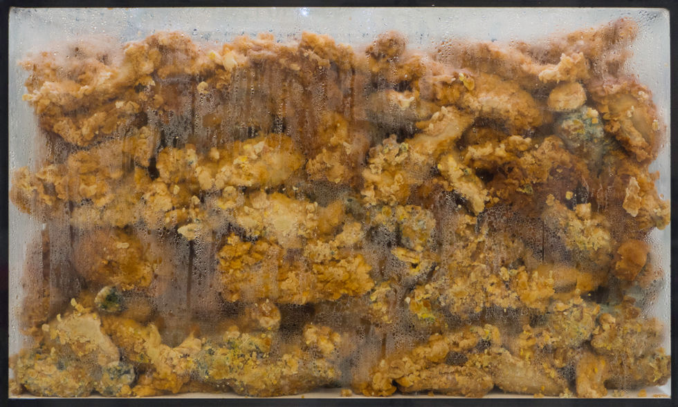
making art
KFC chicken pieces, a well-worn KFC uniform, and the work shoes he donned during his employment presented as "art," Omid aimed to highlight the convergence of the mythical value of labor and art value, sparking meaningful dialogues with fellow artists and visitors. This approach, emphasizing the blending of political discourse with everyday activities, also manifested in Omid's parallel performance, "Eating Art." In this context, he engaged in three performances alongside fellow artists in the gallery, all while enjoying KFC food. These interactions transformed the ordinary act of eating into a platform for political discussion. Within the gallery's environment, these conversations took on heightened significance, transcending the physical performance itself.
parallel performances: selling art / eating art
In three separate performances, "Eating Art" is conversations with fellow artists in the gallery space while consuming KFC, from buying to devouring. These dialogues worked as a medium to inject a political discourse into a seemingly ordinary activity of eating. But with the help of the artwork in its art and gallery context, a new space of conversation was created which, maybe more important than the physical body of the work. What this space was and what it generated can equally be understood within the same symptomatic relationship of labor/art value.
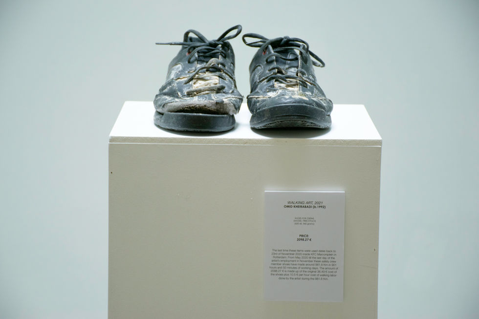
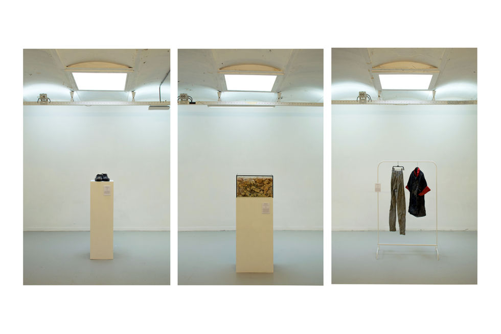
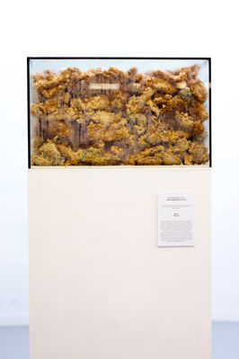
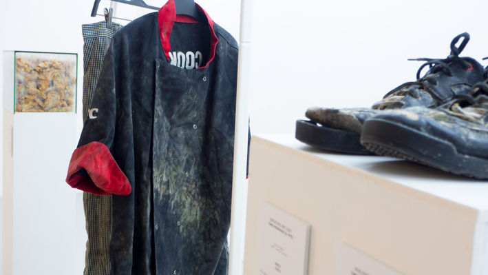
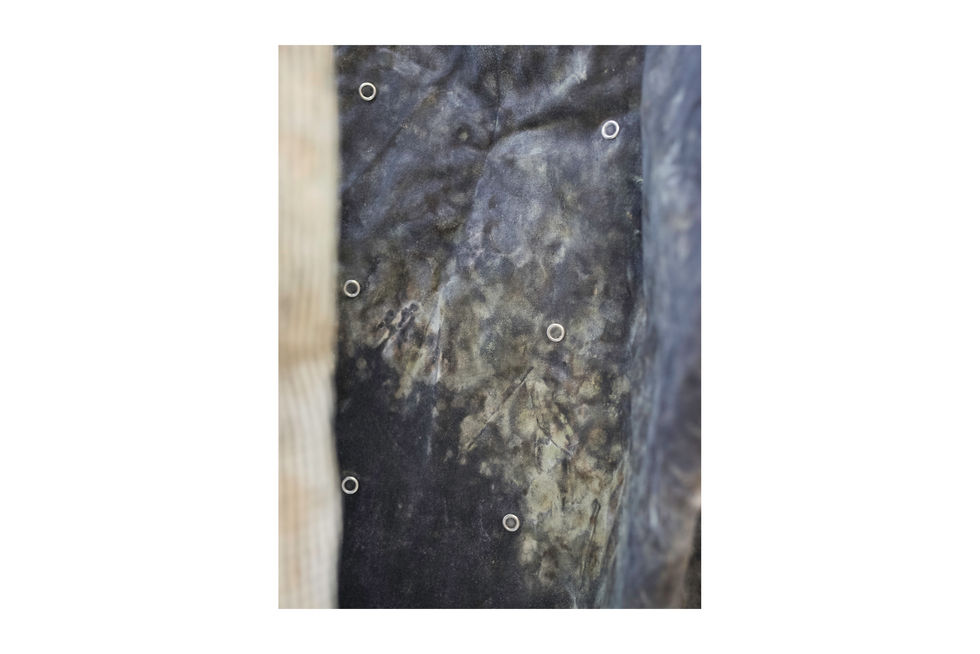
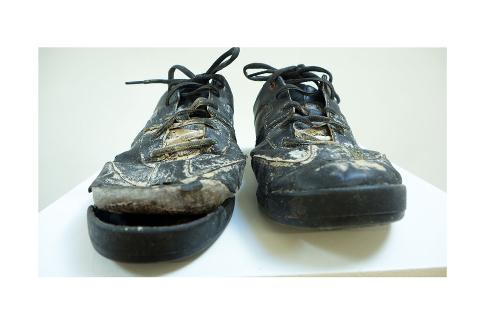
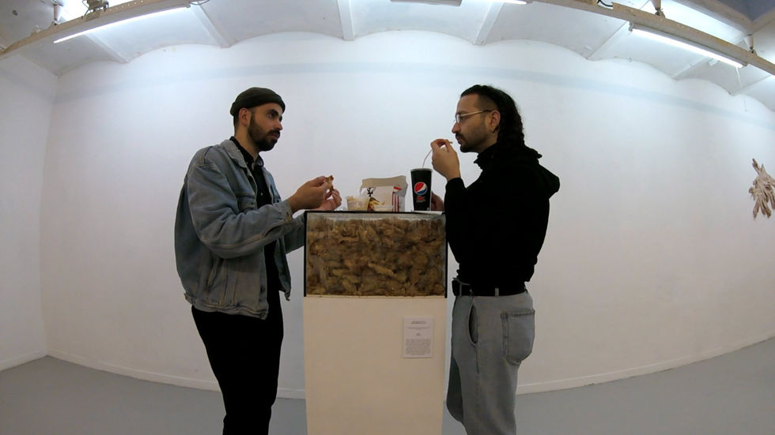
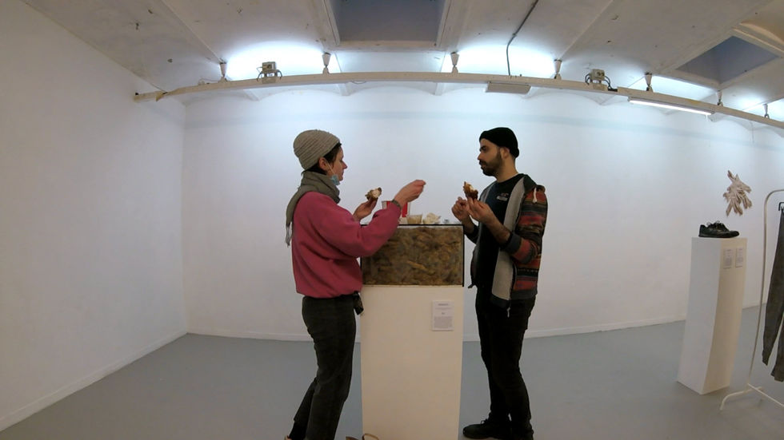
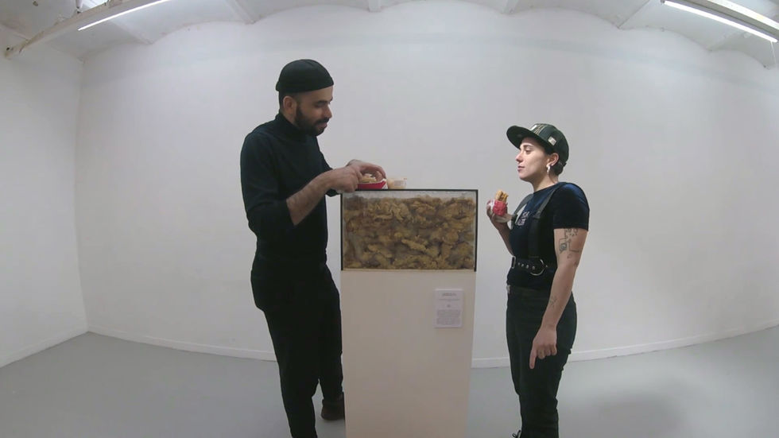
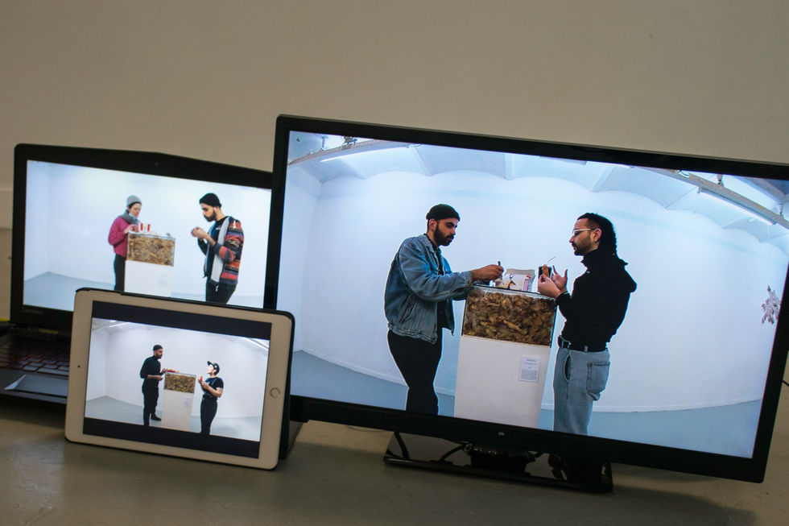
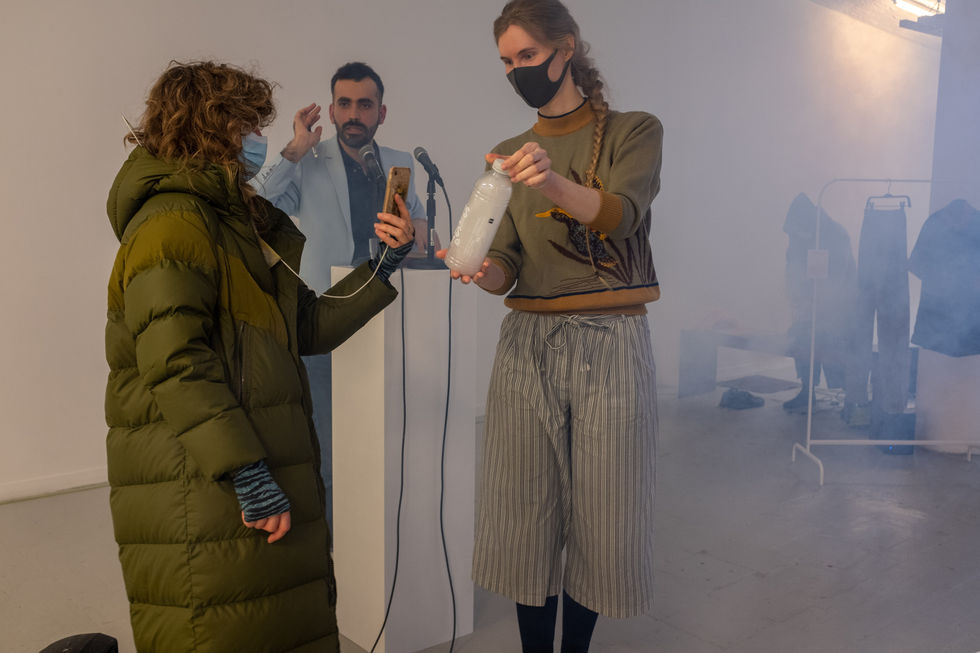
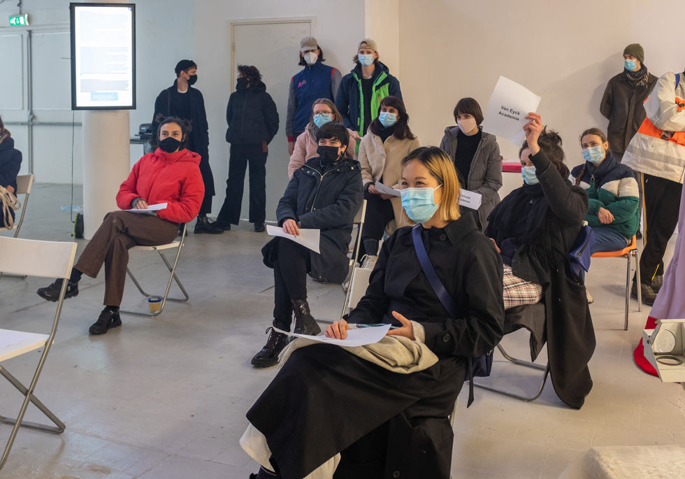
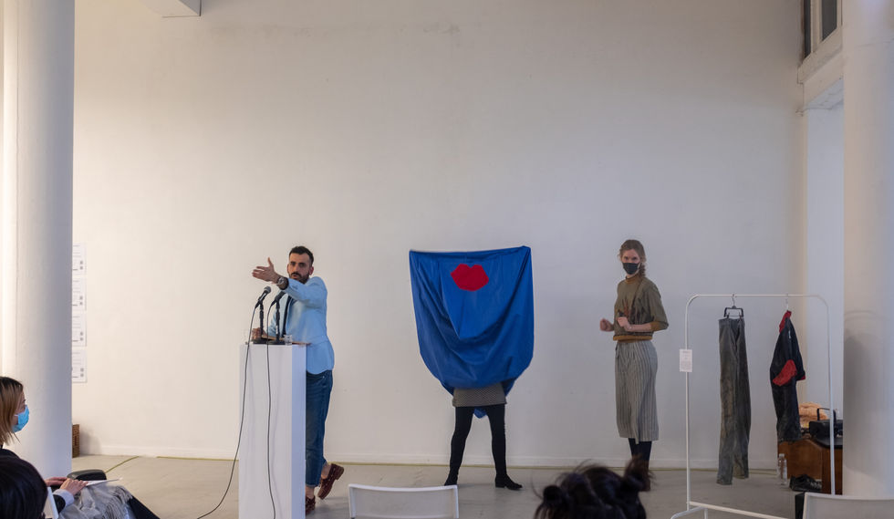
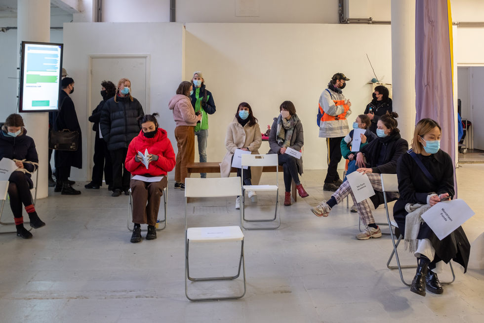
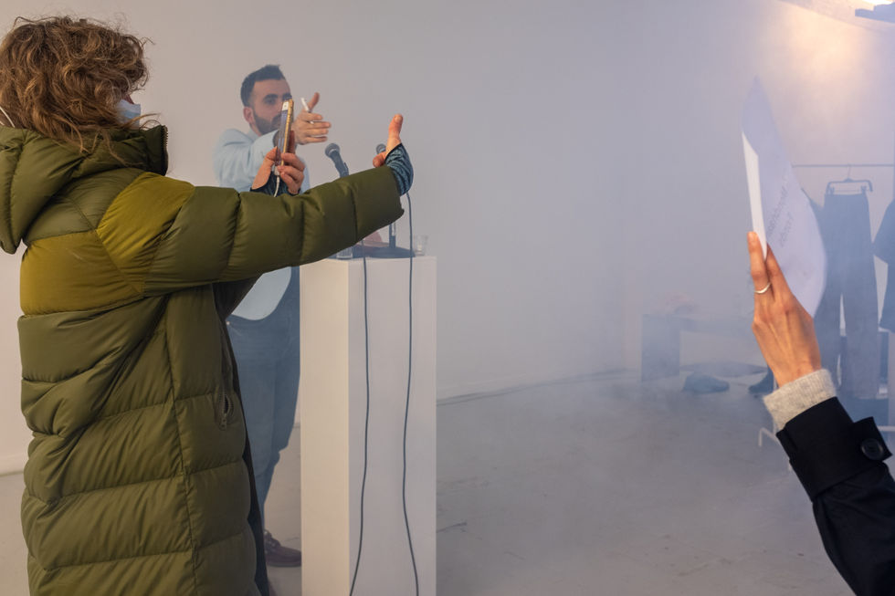
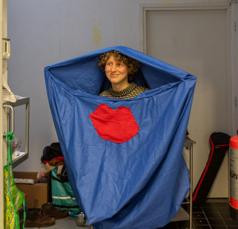
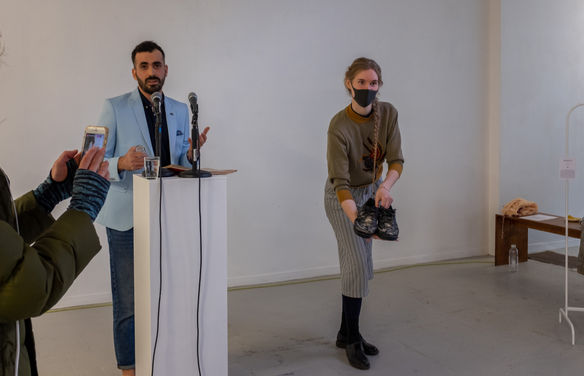
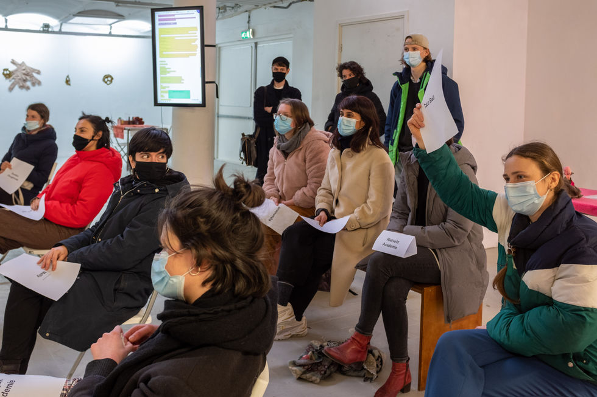